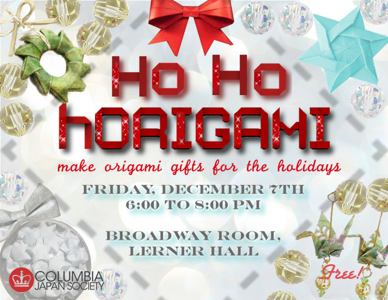

Here are our events so far for this academic year.
Mar. 30th, 2013 @CU Low Plaza | 1-5pm
Matsuri 2013!
Columbia Japan Society is excited to bring you Matsuri 2013: the annual Japanese spring festival on Low Plaza that is sure to provide fun and entertainment for all!
|
{kind=link}
|
When: Saturday, March 30th 1-5p.m.
Where: CU Low Plaza How much: FREE! Facebook Event Page: [Click Here!] |
Food, performances, and fun activities, such as goldfish scooping, yukata dress-up, koi kite-making, calligraphy, paper lantern painting, yo-yo balloon fishing, origami, manga drawing, and ema wishes! |
Dec. 7th, 2012 @Broadway Room (Lerner Hall) | 6-8pm
Ho Ho hOrigami!
|
 view poster
Looking for the perfect gift to give this holiday season? Learn to make holiday cards, ninja stars, or even paper crane jewelry with CJS!
All materials will be provided, and stations will be set up in the Broadway room where members of CJS will show you how to make each masterpiece. Stay for as long or as little as you want, and when you’re done you can take home your creations to give to your friends, or keep them for yourself!
|
{kind=link}
Nov. 10th, 2012 @Broadway Room (Lerner Hall) | 7-9pm
Sushi Night 2012!
Dine in style at CJS's classiest Sushi Night yet! The event will be on Saturday November 10 at the Broadway Room in Lerner Hall. For just $7, you get all-you-can-eat sushi served restaurant-style by the most elegant of CJS waiters and waitresses! Come at the beginning of either session, session 1 from 7:00-7:50PM, followed by session 2 from 8:00-8:50PM.
|
{kind=link}
Oct. 19th, 2012 @East Ramp Lounge (Lerner Hall) | 6-8pm
General Body Meeting
What better way to take a break from all that homework than to have some yummy onigiri with friends? Onigiri, Japanese for "rice ball", is rice formed into a triangular shape and wrapped in dried seaweed.
On Friday, October 19th, CJS will host its first general body meeting
of the year. Come see what we’re all about and learn about what fun
events we have in store! The onigiri study break will be from 6-8pm in
Lerner East Ramp Lounge, and the food will be free! Hope to see you
there!
|
{kind=link}

Stay in touch
Subscribe to our newsletterAffiliations
Columbia University, Barnard College, Weatherhead East Asian institution, Donald Keene Center
Show Some Love
Copyright 2014 Columbia Japan Society. Site maintained by Emily Meng